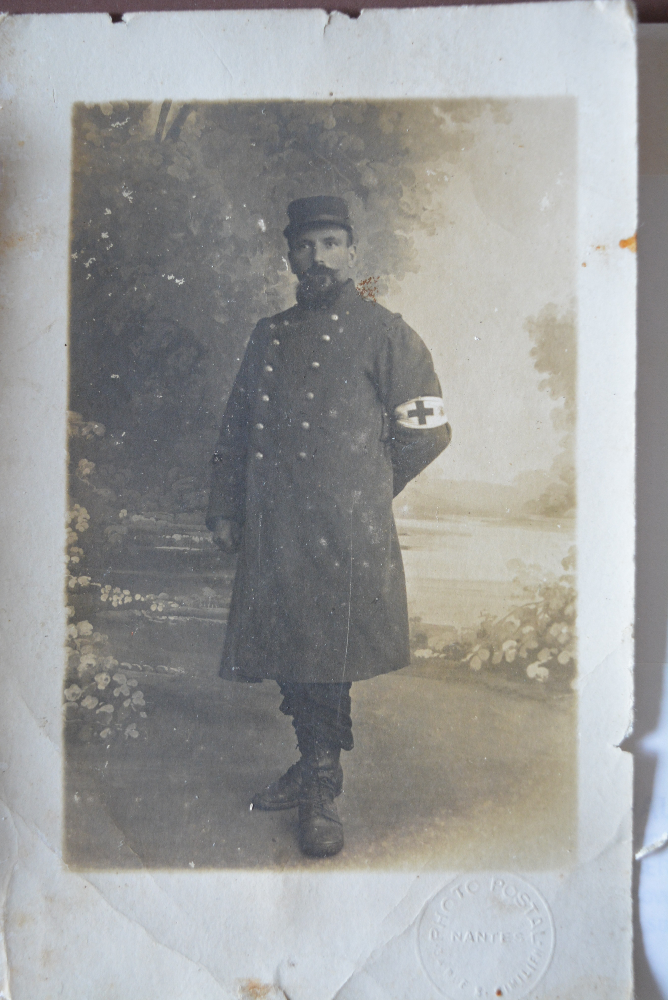
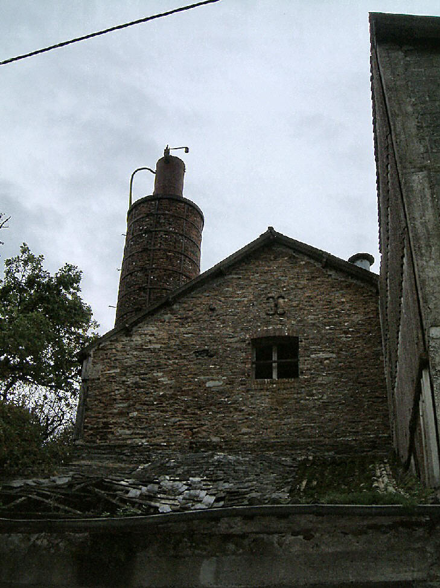
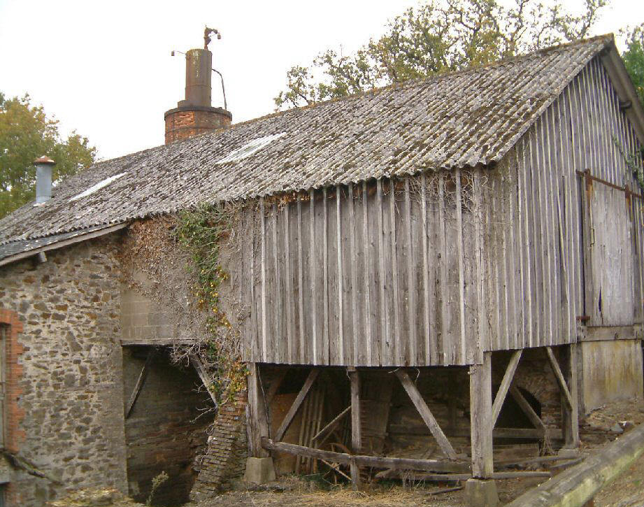
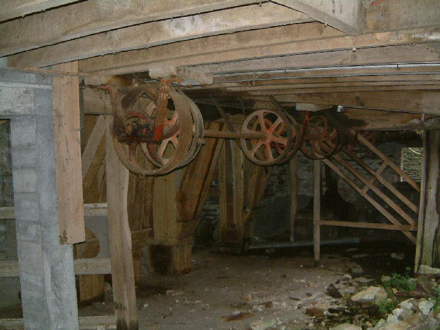
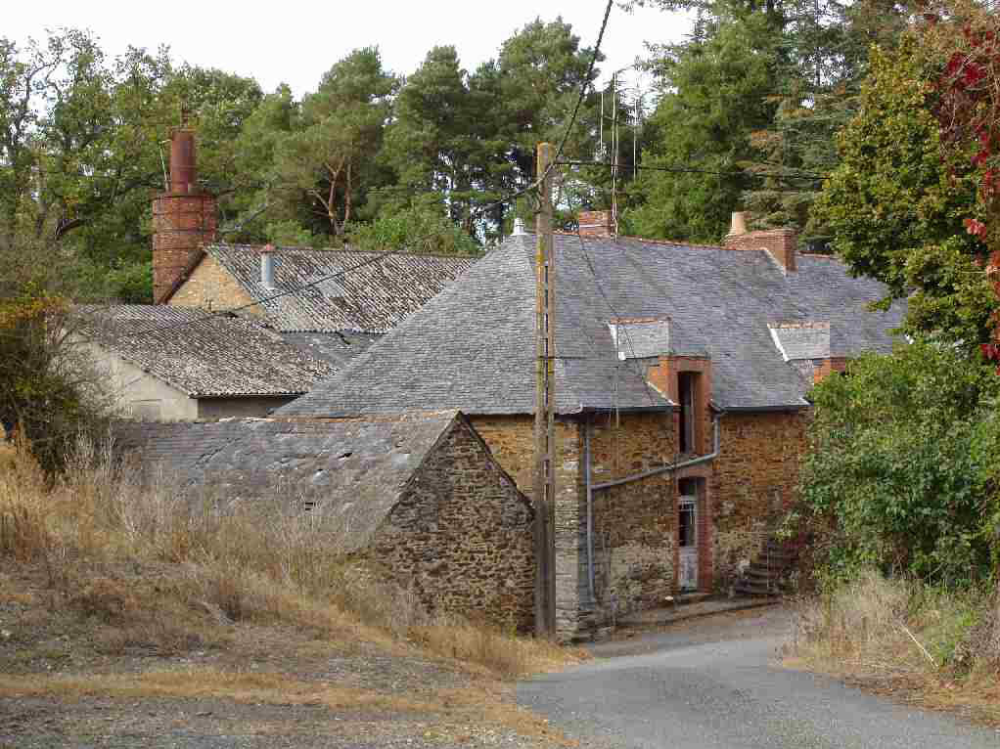

Quatre siècles dans un rayon de vingt-cinq kilomètres
Quatre cent vingt-six ancêtres d'une même famille du pays d'Ancenis,
reconstitués de 1527 à nos jours. Presque tous laboureurs, presque tous nés entre
l'Erdre et la Loire. Et, sur une branche latérale, une fille de laboureur des Touches
qui embarqua au début des années 1780 pour Saint-Domingue et dont le fils allait
devenir le plus célèbre
peintre d'oiseaux du monde.
426ancêtres directs
16générations
11communes principales
1527ancêtre le plus ancien
I · Le pays
Un mouchoir de poche
Sur les 426 ancêtres, l'écrasante majorité naît dans une poignée de
paroisses du nord de la Loire-Inférieure, entre l'Erdre et la Loire. Mésanger et
Les Touches à elles seules en fournissent quatre-vingt-treize.
Carte schématique. La taille des points est proportionnelle au nombre
d'ancêtres nés dans la commune. Nantes et Ancenis figurent comme repères ; Couëron,
en rouge, apparaîtra plus loin.
Cette concentration n'a rien d'anecdotique. Elle raconte une société où l'on
épousait sa voisine, où la terre ne se quittait pas, et où les mêmes patronymes
reviennent de génération en génération. Les actes en portent la trace directe :
Pierre Ouary et Anne Ouarie, mariés vers 1730, étaient cousins. Toute la descendance
remonte donc deux fois au même ancêtre du XVIe siècle, par deux chemins
distincts.
Deux exceptions rompent ce cercle. Les Vavasseur, forgerons, viennent des confins
du Morbihan et des Côtes-d'Armor, à cent cinquante kilomètres de là. Et une branche
part pour l'Amérique — c'est l'objet de la cinquième partie.
De quoi vivait-on
Laboureur22
Cultivatrice8
Cultivateur4
Forgeron3
Boulanger2
Aubergiste2
Maçon2
Métayer1
Menuisier1
Ménagère1
Métiers relevés sur les seuls ancêtres directs. « Laboureur » ne
désigne pas un journalier : c'est le paysan qui possède son attelage et ses charrues,
le haut de la hiérarchie villageoise.
Un ancêtre paysan ne laisse en général que trois lignes : un baptême, un
mariage, une sépulture. Trois hommes de cette lignée font exception, parce qu'un
événement les a jetés dans les archives — une guerre civile, une industrie, une
photographie.
Une colonne de chouans en embuscade. Aucun portrait de Jacques Guérin n'existe : c'est le camp d'en face que la peinture du XIXe siècle a retenu. Jean Sorieul, XIXe siècle, domaine public · Wikimedia Commons
7e génération
Jacques Guérin
vers 1747 — 7 juin 1794
boulanger, aubergiste, officier municipal
Il tenait à Riaillé une boulangerie et l'auberge de L'Écu de France, et
servait la commune comme officier municipal. Dans la nuit du 6 au 7 juin 1794 — le
19 prairial an II —, les chouans du Segréen menés par Sarrazin font une incursion en
Loire-Inférieure : ils saccagent les forges et massacrent une trentaine de
républicains. Jacques Guérin est tué dans l'arrière-salle de sa boulangerie, en haut
du bourg.
Le registre le porte veuf de Jacquette Letort, âgé de quarante-sept ans. Son
beau-frère Jacques Letort, maire de Saint-Mars-la-Jaille, avait été fusillé par les
chouans six mois plus tôt. Le lieu de sa mort devint plus tard le café Delanoue —
du nom de ses propres descendants.
Les Forges des Salles, en forêt de Quénécan. Logis, rangées ouvrières, halles à charbon : le village n'a plus bougé depuis 1877. Wikimedia Commons, CC BY-SA · Wikimedia Commons
9e génération
François Vavasseur
1699 — 1762
forgeron aux Forges des Salles
Seule branche non paysanne de toute l'ascendance. Il épouse Marie Le Breton aux
Forges des Salles le 9 février 1728 et lui donne douze enfants, tous nés dans ce
village perdu au fond de la forêt de Quénécan. Cinq au moins n'atteindront pas
l'âge adulte.
Il y meurt en 1762, à soixante-trois ans. Son père Olivier était déjà forgeron,
son gendre Jacques Chauvel était marteleur : trois métiers du fer dans la même
maisonnée. La suite de cette histoire occupe la section suivante.

Louis Frédéric Bonnet en tenue, brassard au bras, pendant la Grande Guerre. Collection familiale
3e génération
Louis Frédéric Bonnet
1884 — 1957
brancardier, valet de ferme, cultivateur
Brancardier pendant la Grande Guerre. Son frère Henri y est tué en 1915, à
vingt-neuf ans, dans l'attaque de Quennevières. Une photographie le montre en tenue,
brassard au bras.
Avant d'exploiter une très petite ferme à Carquefou, il fut employé — « valet »,
disait-on dans la famille — du marquis de Dion, probablement au château de Maubreuil.
Soit le même homme qui fonda les usines De Dion-Bouton, un temps premier constructeur
automobile du monde. L'écart entre les deux destins, dans le même champ de vision,
dit assez bien ce qu'était la société rurale de 1910.
Nous René Chollet officier public préposé pour l'exécution de la loi du 20 septembre
1792 dans le territoire de la commune de Riaillé, département de la Loire-Inférieure,
district d'Ancenis, sur la déclaration qui nous a été faite par les veuves des
ci-dessous dénommés assassinés…
Registre d'état civil de Riaillé, 19 prairial an II
III · La route du fer
Deux cent quarante-huit kilomètres, six générations
Les forgeurs bretons n'étaient pas des sédentaires. Une forge à bois
dévore sa forêt : quand le charbon manque, on éteint le haut fourneau le temps que les
taillis repoussent, et les familles s'en vont vers le site suivant. Les Vavasseur, puis
les Chauvel qu'ils ont épousés, ont ainsi suivi le fer pendant deux siècles — de la forêt
de Paimpont jusqu'au bocage de Riaillé.
Carte schématique. Les dates correspondent à l'événement familial attesté
sur chaque site.
Le tracé n'a rien d'une errance. Chacune de ces étapes est un site sidérurgique
majeur, et tous appartiennent au même monde : celui des forges à bois de la Bretagne
intérieure, là où le minerai affleure et où la forêt fournit le combustible. Paimpont
et ses huit mille hectares, la Hardouinais mentionnée dès 1570, Quénécan et ses trois
mille six cents hectares.
Ce que ces trajectoires ont de frappant, c'est qu'elles étaient la règle. Les
généalogistes de la région ont depuis longtemps repéré ces familles qui circulent
entre les massifs de Paimpont, de la Hardouinais, de Loudéac et de Quénécan, et
franchissent les limites de l'Ille-et-Vilaine, des Côtes-d'Armor et du Morbihan avant
de descendre vers la Loire-Atlantique — Héric, Orvault, Sautron et, précisément,
Sion-les-Mines. Les Vavasseur en sont un cas d'école.
Le métier lui-même se subdivisait : fondeur au fourneau, affineur, marteleur,
chauffeur, valet de bordeur. Jacques Chauvel, qui épouse Anne Vavasseur, est marteleur
— celui qui bat la loupe de fer sous le martelet hydraulique. On se mariait entre
familles de forge, et l'on transmettait la place avec le nom.
La dernière étape referme la boucle d'une manière que le hasard n'explique
qu'à moitié. En 1875, les forges de Riaillé s'arrêtent définitivement. Une note
familiale, reprise d'un site consacré à l'histoire des forges du bocage, indique que
leur dernier directeur s'appelait Chauvel. Olivier Chauvel, forgeron devenu aubergiste
et cabaretier, arrière-petit-fils de François Vavasseur, meurt à Riaillé le 14 mars de
cette même année 1875.
Le fichier n'établit pas que ce directeur soit lui : sa profession déclarée reste
« forgeron, aubergiste ». Mais la coïncidence de lieu, de nom et d'année vaut d'être
signalée, et mériterait une vérification aux archives.
Riaillé est aussi la commune où, quatre-vingts ans plus tôt, les chouans avaient
saccagé les forges et tué Jacques Guérin. Deux branches de la même ascendance, venues
l'une du bocage et l'autre des forêts du centre de la Bretagne, se rejoignent dans le
même village industriel.
Riaillé n'avait d'ailleurs pas une forge mais trois sites échelonnés sur le même
cours d'eau : le haut fourneau à la Poitevinière, la forge d'affinage en aval à la
Provostière, une fenderie en bout de course à la Vallée. Les deux étangs, soixante-quinze
et soixante-treize hectares, étaient les plus vastes de la région. On y coulait des
clous, des chaudrons, des plaques de cheminée et des boulets de canon.
Le haut fourneau de la Poitevinière tient toujours debout : huit mètres de haut sur
neuf de côté, bâti en schiste, cuve circulaire. Inscrit aux Monuments historiques le
1er avril 1986, il est le dernier survivant de l'aventure métallurgique du
Pays de la Mée. Le nom du lieu vient des familles amenées du Poitou pour exploiter le
minerai — encore une migration du fer, quatre siècles avant celle des Vavasseur.
Le village n'a plus bougé depuis l'arrêt du haut fourneau, le 1er juillet 1877. Wikimedia Commons · Wikimedia CommonsFondé en 1623 par la famille de Rohan, le site a produit du fer pendant deux cent cinquante ans. Wikimedia Commons · Wikimedia CommonsLogis du maître de forges, rangées ouvrières, cantine, école, chapelle, jardins en terrasses : inscrit aux Monuments historiques en 1980, l'ensemble se visite. Wikimedia Commons · Wikimedia Commons
Au terme du voyage : la Poitevinière
Le hameau de la Poitevinière, à Riaillé, où s'achève cette migration de deux siècles.
Le même étang actionnait les soufflets de la forge et les meules du moulin : quand le
haut fourneau s'est éteint, la minoterie a continué de tourner au pied de sa cheminée.
C'est cette cheminée que l'on voit encore, dressée au-dessus des toits du hameau,
cerclée de fer et sanglée d'une échelle. Elle est tout ce qui reste debout de l'ouvrage
qui a fait vivre les Chauvel pendant trois générations, et le dernier témoin de
l'aventure métallurgique du Pays de la Mée.
Un détail s'y ajoute, sans lien de parenté mais qui dit la densité de ces lieux : la
maison voisine du haut fourneau est celle où vécurent les ancêtres de Sophie Trébuchet —
la mère de Victor Hugo.

La cheminée du haut fourneau, inscrite aux Monuments historiques le 1er avril 1986. chouannerie.chez-alice.fr

La minoterie et, derrière elle, la cheminée du haut fourneau. chouannerie.chez-alice.fr

L'intérieur de la minoterie : poulies et courroies de transmission, encore en place sous le plancher. chouannerie.chez-alice.fr

La maison du commis. C'est lui qui tenait les comptes de la forge, pesait le fer et payait les charbonniers — l'intermédiaire entre le maître de forges, souvent absent, et les ouvriers. chouannerie.chez-alice.fr
IV · 1914-1918
Cinq hommes
L'arbre recense cinq hommes en âge de combattre morts entre 1914 et 1916.
Aucun n'est un ancêtre direct : ce sont des frères, des beaux-frères, des cousins. C'est
exactement à cela que ressemble une famille après la guerre — les lignées continuent par
ceux qui sont revenus.
Jean Antoine Penaud32 ans · 1914Verneuil-Courtonne, Aisne
Henri Auguste Bonnet29 ans · 1915Quennevières, Oise
Augustin Pierre Chaintrier26 ans · 1915Souain-Perthes-lès-Hurlus, Marne
Jean Marie Joseph Jumois33 ans · 1916Tahure, Marne
Augustin Rechignard39 ans · 1916Froidos, Meuse
Quennevières, Souain, Tahure : trois noms qui ne disent plus
rien et qui furent, en 1915, des offensives entières. Vingt et un mois séparent le premier
du dernier. Tous venaient du même canton ; aucun n'est mort au même endroit.
V · Le cousin d'Amérique
John James Audubon
Le plus célèbre peintre d'oiseaux du monde est né Jean Rabin, le
26 avril 1785 aux Cayes, à Saint-Domingue. Sa mère, Jeanne Rabine, était née vingt-sept
ans plus tôt au hameau des Mazures, commune des Touches — dans la paroisse même où les
Ouary labouraient depuis deux siècles. Les deux lignées partent du même homme.
John James Audubon. Le naturaliste posa en trappeur pour servir sa légende américaine. Library of Congress, domaine public · Wikimedia CommonsNé Jean Rabin aux Cayes, mort John James Audubon à Manhattan : trois noms pour une seule vie. Wikimedia Commons, domaine public · Wikimedia CommonsPortrait commémoratif, entouré de vignettes tirées de ses planches. Library of Congress, domaine public · Wikimedia Commons
Les deux branches
Guillaume Ouary, laboureur aux Touches, meurt en 1652. Deux de
ses enfants ouvrent deux histoires sans rapport : son fils Pierre reste au village, sa
fille Renée est à l'origine de la lignée qui mènera à Audubon. Onze générations d'un côté,
sept de l'autre.
Cousinage au sixième degré, avec quatre générations d'écart.
Jeanne Rabine, fille de chambre
Baptisée aux Touches, à l'église Sainte-Mélaine, le 14 mars 1758. Le tanneur Cébron,
voisin du hameau des Mazures, la recommande à Jacques Pallon de la Bouverie, juge en
retraite devenu planteur. Elle embarque quai de la Fosse à Nantes sur
Le Conquérant, avec la famille Pallon, pour Saint-Domingue. Elle a un peu plus
de vingt ans et ne reverra jamais la Bretagne.
La date de ce départ n'est pas établie. La commune des Touches donne le 23 octobre
1781 ; la biographie d'Yvon Chatelain, reprise par les bases généalogiques, indique
septembre 1783. Deux ans d'écart entre deux sources de seconde main, qu'aucun document
d'archive consulté ici ne permet de départager. Les rôles d'armement conservés aux
Archives départementales de Loire-Atlantique trancheraient.
Le navire lui-même reste introuvable. Le nom revenait souvent dans l'armement
nantais — un Conquérant de Nantes figure dès 1746 parmi les prises saisies par
les Anglais — et rien ne permet d'identifier celui de Jeanne Rabine. Une certitude
toutefois : transportant un magistrat, son épouse, ses trois filles et leur domestique,
il naviguait « en droiture », la route directe vers la colonie, et non sur le circuit
triangulaire de la traite. Nuance qui compte, car l'homme qui la recueillit à
l'arrivée, lui, était capitaine négrier.
Aux Cayes, elle rencontre Jean Audubon, capitaine nantais, planteur et négrier,
marié en France. Elle meurt quelques mois après la naissance de son fils, emportée par
une fièvre tropicale. L'enfant est confié à Catherine Bouffard, compagne de son père,
puis ramené en France en 1788.
Il grandit à La Gerbetière, à Couëron, chez l'épouse légitime de son père. En 1794,
le couple l'adopte sous le prénom de Fougère — le nom du jour de sa naissance
au calendrier républicain. En 1803, muni d'un faux passeport destiné à lui éviter la
conscription, il embarque pour les États-Unis sous le nom de John James Audubon.
L'église Sainte-Mélaine des Touches, paroisse de baptême de Jeanne Rabine en 1758. Llann Wé², CC BY-SA 3.0 · Wikimedia Commons
Une vie
1785Naissance aux Cayes, à Saint-Domingue, sous le nom de Jean Rabin. Sa mère meurt quelques mois plus tard.
1788Son père l'emmène en France. Il grandit à La Gerbetière, à Couëron, chez l'épouse légitime de celui-ci.
1794Adopté sous le prénom de Fougère, nom du jour de sa naissance au calendrier républicain.
1803Départ pour les États-Unis avec un faux passeport, destiné à lui éviter la conscription napoléonienne.
1808Épouse Lucy Bakewell. Le couple part tenter sa chance sur la frontière du Kentucky.
1819Faillite, prison pour dettes. Il n'a plus que son crayon pour vivre et se met au portrait.
1826Embarque pour l'Angleterre avec 250 dessins, cherche graveurs et souscripteurs.
1827Première livraison de The Birds of America. La gravure commence à Édimbourg chez Lizars, puis passe à Londres chez Havell.
1838Dernière planche. Onze ans de parution, 435 planches, 1 065 oiseaux.
1851Meurt à Manhattan, dans le domaine qui deviendra le quartier d'Audubon Park.
L'œuvre
The Birds of America est une folie technique autant
qu'artistique. Audubon exige que chaque oiseau soit représenté grandeur nature : il faut
donc du papier « double éléphant », le plus grand format disponible, et le flamant rose
doit courber le cou pour tenir dans la page. Chaque planche est gravée à l'eau-forte et
à l'aquatinte, puis coloriée à la main, une par une.
435planches gravées, coloriées à la main, publiées de 1827 à 1838
1 065oiseaux représentés, tous à taille réelle
97 × 66centimètres : le format « double éléphant », imposé par la taille du héron
11,5millions de dollars, record mondial pour un livre imprimé, Sotheby's 2010
The Birds of America, l'ouvrage de toute une vie, publié à ses frais pendant onze ans. Wikimedia Commons, domaine public · Wikimedia CommonsPlanche I : le dindon sauvage, gravé par W. H. Lizars à Édimbourg. Audubon fit du « gobbler » son sceau personnel, avec la devise America my country. BnF via Wikimedia Commons, domaine public · Wikimedia CommonsPlanche V, première livraison. Chaque oiseau est peint grandeur nature, sur sa plante nourricière. BnF via Wikimedia Commons, domaine public · Wikimedia Commons
Le financement se fait par souscription, planche après planche,
pendant onze ans. L'entreprise coûte à Audubon 115 640 dollars de l'époque — plus de deux
millions d'aujourd'hui — qu'il finance en vendant des copies à l'huile, des portraits et
des peaux d'animaux chassés en route. Moins de cent vingt exemplaires complets subsistent.
En décembre 2010, l'un d'eux est adjugé 11,5 millions de dollars chez Sotheby's à Londres :
le prix le plus élevé jamais payé pour un livre imprimé.
Trois anecdotes
Le fil d'argent. Au printemps 1804, à Mill Grove en Pennsylvanie,
Audubon noue un fil d'argent à la patte de cinq oisillons — des moucherolles phébi —
pour savoir si les oiseaux reviennent nicher où ils sont nés. Il affirme en avoir
retrouvé deux l'année suivante. L'histoire lui vaut le titre de premier bagueur
d'oiseaux d'Amérique. Elle est aujourd'hui contestée : un taux de retour de 40 %
est vingt fois supérieur à ce qu'observent les ornithologues modernes, et une
reconstitution des dates montre qu'il n'était pas en Pennsylvanie au printemps 1805.
Le canular des poissons. En 1818, le naturaliste Constantine
Rafinesque séjourne chez lui dans le Kentucky. Une nuit, croyant capturer une
chauve-souris d'espèce nouvelle, il fracasse le violon favori de son hôte. Audubon se
venge en lui décrivant des poissons et des mammifères de l'Ohio entièrement imaginaires,
que Rafinesque publie sérieusement comme espèces nouvelles.
L'aigle qui n'existait pas. Sa carrière décolle avec la
« Bird of Washington », un aigle géant qu'il dit avoir observé et dont il fait une
planche spectaculaire. Aucun spécimen n'a jamais été retrouvé, aucune observation
indépendante n'est venue la confirmer, et les travaux récents concluent à une
fabrication. L'oiseau qui l'a rendu célèbre n'a probablement jamais volé.
Ces trois épisodes ne retirent rien à l'œuvre. Ils rappellent qu'Audubon était
aussi un entrepreneur en quête de souscripteurs, dans un milieu scientifique où la
découverte d'une espèce valait une réputation.
Ce qui porte son nom
Une montagne du Colorado, d'abord : le mont Audubon, 4 032 mètres,
dans les Indian Peaks du Front Range, au nord-ouest de Boulder. Un quartier de
Manhattan ensuite, Audubon Park, bâti sur le domaine où il finit ses jours. Plusieurs
oiseaux enfin — la paruline d'Audubon, l'oriole d'Audubon, le puffin d'Audubon.
Et surtout la National Audubon Society, fondée en 1905, plus d'un
demi-siècle après sa mort et sans aucun lien avec sa famille. C'est aujourd'hui la
plus ancienne et la plus vaste organisation de protection des oiseaux des États-Unis.
Deux ouvrages portent aussi son nom, et disent bien ce qu'il est devenu là-bas. À
Henderson, dans le Kentucky, où il tint boutique de 1810 à 1819, un musée bâti en 1938
abrite l'une des plus grandes collections de ses originaux — dans un bâtiment de style
normand français élevé en hommage à ses origines, dont la tour comporte des niches
creusées exprès pour que les oiseaux y nichent.
Et sur le Mississippi, entre les paroisses de Pointe Coupee et de West Feliciana,
le pont John James Audubon, ouvert en mai 2011. Sa travée centrale de
482 mètres en fit à sa mise en service le plus long pont à haubans de l'hémisphère
occidental. Il remplace un bac et reste le seul franchissement du fleuve sur cent
cinquante kilomètres. Il enjambe le fleuve à quelques milles d'Oakley Plantation, où
Audubon peignit une partie de ses oiseaux en 1821.
Ce nom fait débat. Audubon possédait des esclaves — neuf personnes travaillaient
dans sa maison — les a vendus lors de sa faillite, en a racheté dans les années 1820,
et s'est publiquement opposé à l'abolition. Le 15 mars 2023, après plus d'un an de
consultation, le conseil d'administration de la National Audubon Society a voté le
maintien du nom, estimant que l'organisation « dépasse le nom d'une seule personne »,
tout en engageant 25 millions de dollars pour ses programmes de diversité.
Le musée de Henderson, Kentucky, bâti en 1938 dans un style normand français en hommage à ses origines. Sa tour est percée de niches où les oiseaux peuvent nicher. Wikimedia Commons · Wikimedia CommonsLe pont John James Audubon, ouvert en 2011 : 482 mètres de travée centrale, le plus long pont à haubans de l'hémisphère occidental à sa mise en service. Wikimedia Commons · Wikimedia Commons
Sa descendance
Ses deux fils survivants, Victor Gifford et John Woodhouse,
épousèrent les deux filles de John Bachman, le pasteur-naturaliste de Charleston qui
collabora aux Quadrupèdes vivipares d'Amérique : Maria Rebecca et Mary Eliza,
mortes toutes deux avant trente ans, à un an d'intervalle. Les deux frères se
remarièrent.
La lignée masculine américaine s'est ensuite presque éteinte. Selon le biographe
Francis Hobart Herrick, William Bakewell Audubon (1847-1932), petit-fils du peintre,
émigra en Australie ; son fils Leonard Benjamin, né en 1888, resta l'unique représentant
mâle de la branche américaine des Audubon.
VI · Le pays aujourd'hui
Les Touches
Deux mille six cent trente-huit habitants en 2023, canton de
Nort-sur-Erdre. Le hameau des Mazures existe toujours. L'église Sainte-Mélaine, où
Jeanne Rabine fut baptisée en 1758, a été reconstruite au XIXe siècle, mais
la commune entretient la mémoire de celle qui en est partie.
Le bocage vu du Mont-Juillet : le paysage de neuf générations sur seize. Wikimedia Commons · Wikimedia CommonsLes Touches sur la carte de Cassini, levée peu avant le départ de Jeanne Rabine. Wikimedia Commons, domaine public · Wikimedia CommonsL'église Sainte-Mélaine, reconstruite au XIXe siècle. Llann Wé², CC BY-SA 3.0 · Wikimedia Commons
VII · L'arbre
Quatre cent vingt-six personnes, rangées en cercles
Chaque anneau est une génération, chaque secteur un ancêtre. Le vert
signale une personne identifiée, le beige une case restée vide. Les noms n'apparaissent
que sur les quatre premiers anneaux : au-delà, ils deviendraient illisibles, mais le
dessin continue de dire l'essentiel.
VIII · Ce que la mémoire retient
L'échelle des générations
Chaque génération double le nombre théorique d'ancêtres : 2 parents,
4 grands-parents, 8 arrière-grands-parents. À la seizième, il en faudrait 65 536. Le
tableau confronte ce que la théorie exige à ce que les registres ont livré. La chute est
le sujet même de toute généalogie.
Jusqu'à la quatrième génération, la mémoire tient : quatorze
arrière-arrière-grands-parents sur seize. Puis les registres paroissiaux prennent le
relais et le rendement s'effondre — 27 % à la septième génération, 3 % à la onzième.
Le maximum absolu se situe à la onzième génération, avec cinquante-neuf ancêtres
identifiés : c'est la limite pratique des registres de Loire-Atlantique, dont les plus
anciens remontent au milieu du XVIe siècle.
IX · Vivre et mourir
Une espérance de vie qui recule avant de bondir
Âge moyen au décès, calculé sur les 1 158 personnes de l'arbre dont on
connaît à la fois la naissance et la mort, regroupées par demi-siècle de naissance.
La courbe se dégrade régulièrement du XVIIe au début
du XIXe siècle, avec un creux marqué pour la génération née entre 1800 et 1849 —
celle qui atteint l'âge adulte dans une campagne appauvrie et affronte les épidémies de
choléra. Le redressement du XXe siècle est spectaculaire : plus de vingt-six
années gagnées en un siècle.
Une réserve sur le premier point
Les 61 ans affichés pour la cohorte 1550-1599 sont un mirage statistique. Pour cette
période, seules les personnes ayant vécu longtemps — donc laissé plusieurs actes — ont
pu être identifiées. Les nourrissons morts sans baptême inscrit n'apparaissent nulle
part. Le chiffre mesure la survie des documents, pas celle des gens.
Onze pour cent des personnes datées meurent avant cinq
ans. Le chiffre réel était bien supérieur : ces enfants-là sont précisément ceux
que les registres oublient le plus.